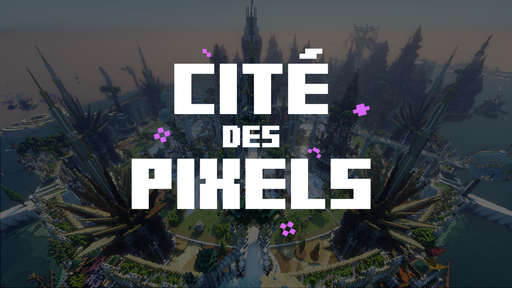

-
La Cité Des Pixels
La Cité des Pixels est un tournoi caritatif sur Minecraft au profit de l'UNICEF organisé par un camarade du Gaming Campus.
J'ai eu la chance de participer à l'organisation de l'évènement, en développant un datapack et un plugin, puis en tant que modérateur ingame pendant l'événement.
Au final nous avons récolté plus de 71 000€ pour l'UNICEF.71 000 € !
— Cité Des Pixels (@CiteDesPixels) June 29, 2024
Les portes de la Cité se sont fermées sur une cagnotte folle que l'on n'imaginait même pas, et tout cela grâce à vous 🫶
De la part de toute l'équipe de bénévoles, merci du fond du coeur d'avoir cru en nous et de nous avoir suivi pendant cette incroyable semaine … pic.twitter.com/2CZA62Hyao

-
Galactic EmuRéalisé à la fin de ma 1ere année de Bachelor au sein d'une équipe de 9 personnes, Galactic Emu est un jeu Bullet Hell codé avec Pygame.
Pour ma part, je me suis concentré sur le système de tir du joueur et des ennemis, permettant de créér des patterns complexes pour les différentes phases du boss.